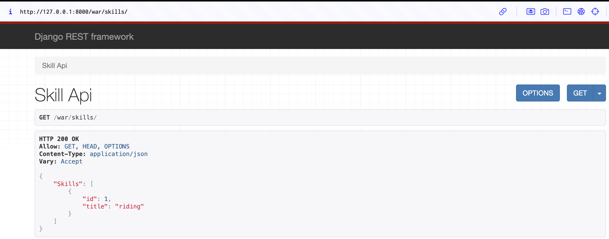
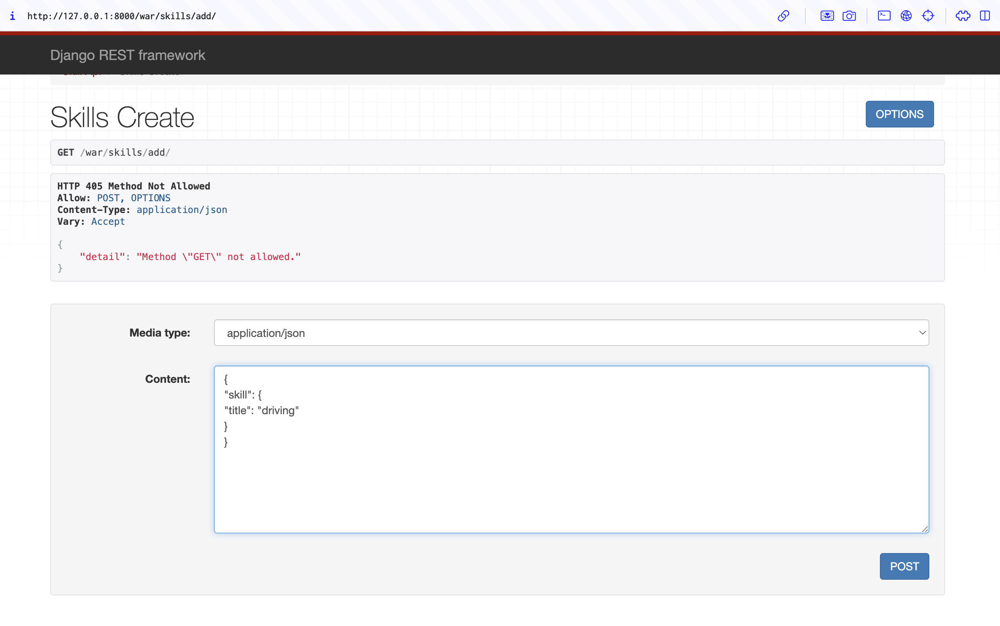
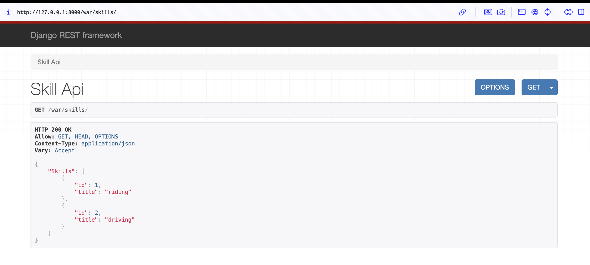
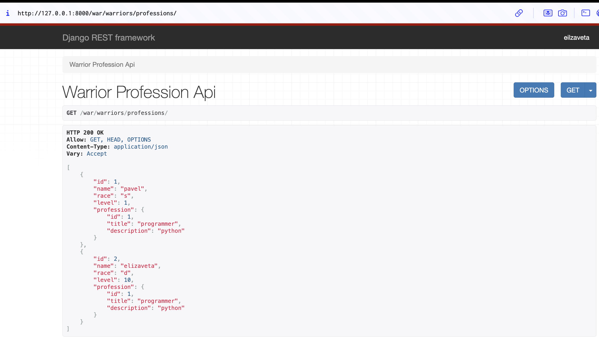
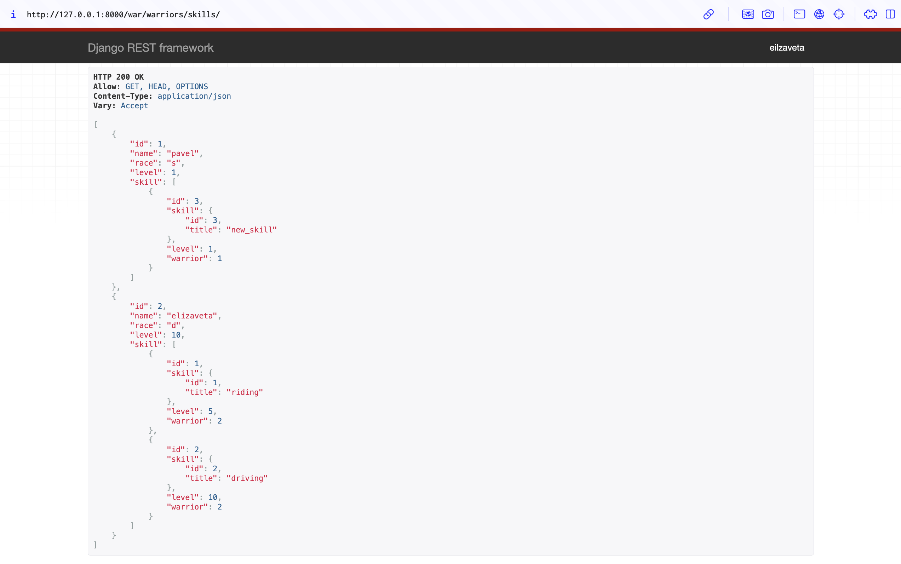
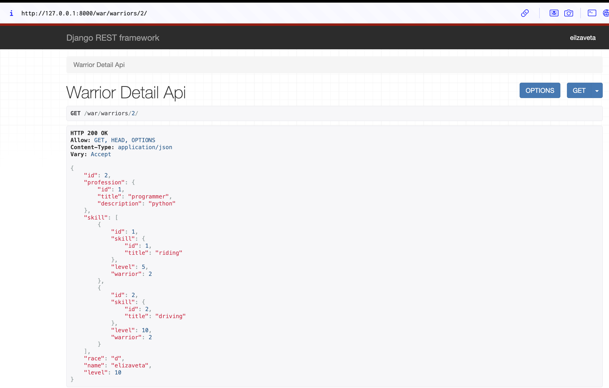
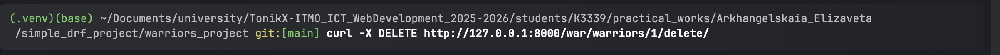
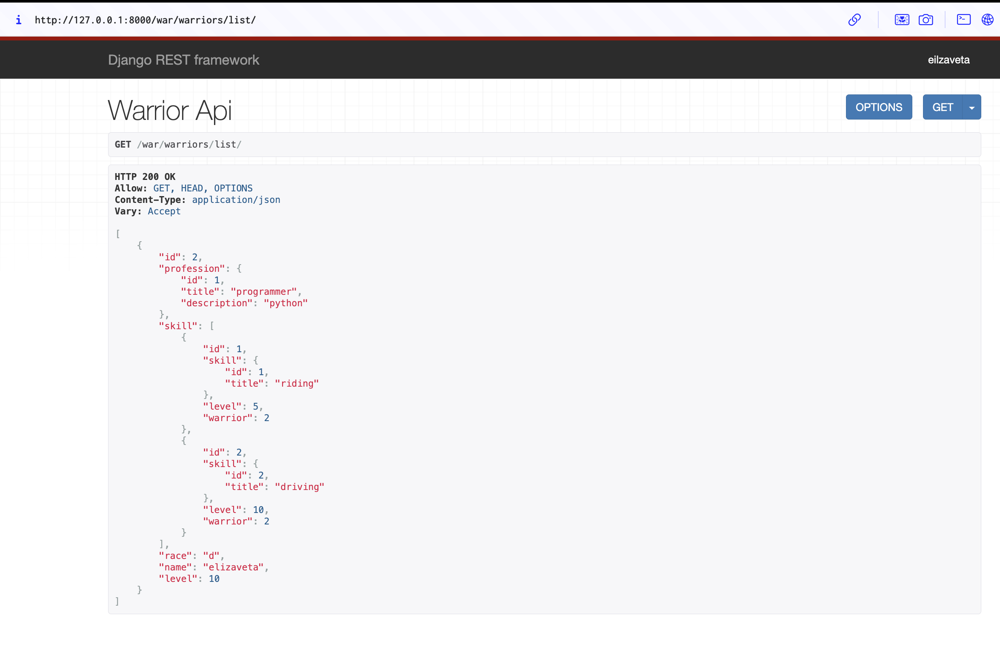
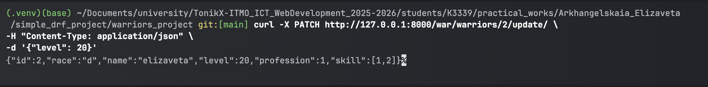
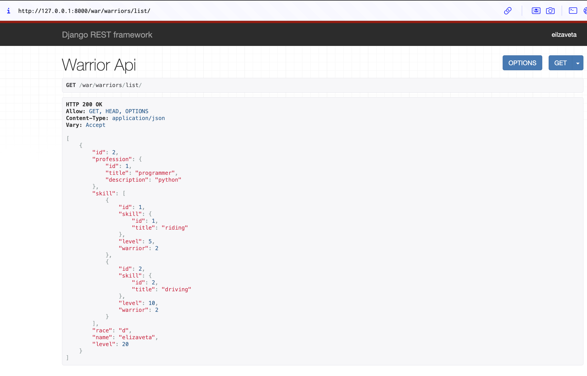

Практическое задание 3.2
Практическое задание 3.2
- Реализовать эндпоинты для добавления и просмотра скилов методом, описанным в пункте выше.
serializers.py
class SkillSerializer(serializers.ModelSerializer):
class Meta:
model = Skill
fields = "__all__"
class SkillCreateSerializer(serializers.ModelSerializer):
class Meta:
model = Skill
fields = "__all__"
views.py
class SkillAPIView(APIView):
def get(self, request):
skills = Skill.objects.all()
serializer = SkillSerializer(skills, many=True)
return Response({"Skills": serializer.data})
class SkillsCreateView(APIView):
def post(self, request):
skill = request.data.get("skill")
serializer = SkillCreateSerializer(data=skill)
if serializer.is_valid(raise_exception=True):
skill_saved = serializer.save()
return Response({"Success": "Skill '{}' created succesfully.".format(skill_saved.title)})
urls.py
urlpatterns = [
path('warriors/', WarriorAPIView.as_view()),
path('profession/create/', ProfessionCreateView.as_view()),
path('skills/', SkillAPIView.as_view()),
path('skills/add/', SkillsCreateView.as_view()),
]



- Вывод полной информации о всех воинах и их профессиях (в одном запросе).
- Вывод полной информации о всех воинах и их скилах (в одном запросе).
Создаем в views.py два класса, один отвечает за задачу 2, второй за задачу 3.
class WarriorProfessionAPIView(generics.ListAPIView):
queryset = Warrior.objects.select_related('profession').all()
serializer_class = WarriorSerializer
def get_serializer(self, *args, **kwargs):
serializer = super().get_serializer(*args, **kwargs)
allowed = ['id', 'name', 'race', 'level', 'profession']
serializer.child.fields = {field: serializer.child.fields[field] for field in allowed}
return serializer
class WarriorSkillsAPIView(generics.ListAPIView):
queryset = Warrior.objects.prefetch_related('skillofwarrior_set__skill').all()
serializer_class = WarriorSerializer
def get_serializer(self, *args, **kwargs):
serializer = super().get_serializer(*args, **kwargs)
allowed = ['id', 'name', 'race', 'level', 'skill']
serializer.child.fields = {field: serializer.child.fields[field] for field in allowed}
return serializer
Обновленные serializers.py
class SkillOfWarriorSerializer(serializers.ModelSerializer):
skill = SkillSerializer()
class Meta:
model = SkillOfWarrior
fields = "__all__"
class WarriorSerializer(serializers.ModelSerializer):
profession = ProfessionSerializer()
skill = SkillOfWarriorSerializer(source='skillofwarrior_set', many=True)
class Meta:
model = Warrior
fields = "__all__"
Так же добавляем в urls.py пути:
path('warriors/professions/', WarriorProfessionAPIView.as_view()),
path('warriors/skills/', WarriorSkillsAPIView.as_view())
Результаты:


- Вывод полной информации о воине (по id), его профессиях и скилах.
Во
views.pyсоздаем новый класс, используем RetrieveAPIView, чтобы выбрать нужного воина поid
class WarriorDetailAPIView(generics.RetrieveAPIView):
serializer_class = WarriorSerializer
queryset = Warrior.objects.all()
lookup_field = 'id'
Так же добавляем в urls.py следующий путь path('warriors/<int:id>/', WarriorDetailAPIView.as_view())
Результат по запросу с id=2:

- Удаление воина по id.
views.py
class WarriorDestroyAPIView(generics.DestroyAPIView):
serializer_class = WarriorSerializer
queryset = Warrior.objects.all()
lookup_field = 'id'
В urls.py добавляем path('warriors/<int:id>/delete', WarriorDestroyAPIView.as_view())

В результате запись с id=1 удалилась, это можно проверить по пути war/warriors/list

- Редактирование информации о воине.
views.py
class WarriorUpdateAPIView(generics.UpdateAPIView):
queryset = Warrior.objects.all()
serializer_class = WarriorUpdateSerializer
lookup_field = 'id'
В urls.py добавляем path('warriors/<int:id>/update', WarriorUpdateAPIView.as_view())

В результате в записи с id=2 изменился уровень на 20:
